<!DOCTYPE html><html><head>
  <!--
    If you are serving your web app in a path other than the root, change the
    href value below to reflect the base path you are serving from.

    The path provided below has to start and end with a slash "/" in order for
    it to work correctly.

    For more details:
    * https://developer.mozilla.org/en-US/docs/Web/HTML/Element/base

    This is a placeholder for base href that will be replaced by the value of
    the `--base-href` argument provided to `flutter build`.
  -->
  <base href="/">

  <meta charset="UTF-8">
  <meta content="IE=Edge" http-equiv="X-UA-Compatible">

  <!-- SEO: primary meta tags -->
  <meta name="description" content="Dutch Remit is Cameroon's biggest cross-border remittance and virtual card platform, and one of Africa's leading platforms for sending money and spending online — with Europe, UAE and Asia coverage expanding, mobile money and bank payouts across 120+ countries, 20+ currencies, backed by global fintech infrastructure.">
  <meta name="keywords" content="Dutch Remit, Cameroon money transfer, send money to Cameroon, African remittances, international money transfer, send money abroad, receive money internationally, currency exchange, global payments, mobile money Cameroon, virtual card Cameroon, send money to UAE, send money to Dubai, send money to Europe, send money to Asia">
  <meta name="author" content="Dutch Remit">
  <meta name="robots" content="index, follow">
  <link rel="canonical" href="https://dutchremit.dubiabank.com/">

  <!-- Open Graph / Facebook, LinkedIn, etc. link previews -->
  <meta property="og:type" content="website">
  <meta property="og:url" content="https://dutchremit.dubiabank.com/">
  <meta property="og:title" content="Dutch Remit — Cameroon's Biggest Remittance & Cards Platform, Africa's Leading Choice">
  <meta property="og:description" content="Dutch Remit is Cameroon's biggest cross-border remittance and virtual card platform, and one of Africa's leading platforms — with Europe, UAE and Asia coverage expanding, mobile money and bank payouts across 120+ countries, 20+ currencies, backed by global fintech infrastructure.">
  <meta property="og:image" content="https://dutchremit.dubiabank.com/icons/Icon-512.png">
  <meta property="og:site_name" content="Dutch Remit">

  <!-- Twitter Card -->
  <meta name="twitter:card" content="summary_large_image">
  <meta name="twitter:url" content="https://dutchremit.dubiabank.com/">
  <meta name="twitter:title" content="Dutch Remit — Cameroon's Biggest Remittance & Cards Platform, Africa's Leading Choice">
  <meta name="twitter:description" content="Dutch Remit is Cameroon's biggest cross-border remittance and virtual card platform, and one of Africa's leading platforms — mobile money and bank payouts across 120+ countries, 20+ currencies.">
  <meta name="twitter:image" content="https://dutchremit.dubiabank.com/icons/Icon-512.png">

  <!-- Structured data: tells search engines this is a financial service -->
  <script type="application/ld+json">
  {
    "@context": "https://schema.org",
    "@graph": [
      {
        "@type": "Organization",
        "name": "Dutch Remit",
        "url": "https://dutchremit.dubiabank.com/",
        "logo": "https://dutchremit.dubiabank.com/icons/Icon-512.png",
        "sameAs": [],
        "areaServed": {
          "@type": "Country",
          "name": "Cameroon"
        }
      },
      {
        "@type": "WebSite",
        "url": "https://dutchremit.dubiabank.com/",
        "name": "Dutch Remit",
        "description": "Dutch Remit is Cameroon's biggest cross-border remittance and virtual card platform and one of Africa's leading platforms for sending money and spending online."
      },
      {
        "@type": "FinancialService",
        "name": "Dutch Remit",
        "description": "Dutch Remit is Cameroon's biggest cross-border remittance and virtual card platform, and one of Africa's leading platforms — connecting Cameroon and the wider African diaspora with mobile money and bank payouts across 120+ countries and 20+ currencies, with Europe, UAE and Asia coverage expanding, backed by global fintech infrastructure (Eversend, Klasha).",
        "areaServed": ["Cameroon", "Africa", "Europe", "United Arab Emirates", "Asia", "Worldwide"]
      }
    ]
  }
  </script>

  <!-- iOS meta tags & icons -->
  <meta name="mobile-web-app-capable" content="yes">
  <meta name="apple-mobile-web-app-status-bar-style" content="black">
  <meta name="apple-mobile-web-app-title" content="Dutch Remit">
  <link rel="apple-touch-icon" href="icons/Icon-192.png">

  <!-- Favicon -->
  <link rel="icon" type="image/png" href="favicon.png">

  <title>Dutch Remit — Cameroon's Biggest Remittance & Cards Platform, Africa's Leading Choice</title>
  <link rel="manifest" href="manifest.json">
  <link rel="stylesheet" type="text/css" href="splash/style.css">
  <meta content="width=device-width, initial-scale=1.0, maximum-scale=1.0, user-scalable=no" name="viewport">
  <script src="splash/splash.js"></script>

  <!-- Note: the plaid_flutter package and its Plaid Link script were
       previously required here, but the entire Plaid bank-linking
       integration (services/plaid_service.dart, link_bank_account_screen.dart,
       plaid_bank_transfer_screen.dart) was confirmed dead code — never
       referenced by any live screen — during this app's full platform
       audit. The plaid.com script tag is removed accordingly; if the
       plaid_flutter package is also dropped from pubspec.yaml, nothing
       here depended on it.
</head>
<body>
  <style>
    body {
      margin: 0;
      background: #163172;
      font-family: -apple-system, BlinkMacSystemFont, "Segoe UI", Roboto, Helvetica, Arial, sans-serif;
    }

    #seo-shell {
      position: relative;
      /* Same stacking tier as #splash below (z-index: 0, not 1) — the
         Flutter engine appends its own root element to <body> *after*
         this div in source order, so once it paints, it naturally
         covers this shell for real users without needing JS to hide
         or remove it. This div is intentionally NEVER hidden or
         removed: it's the only text content a crawler that reads the
         DOM (Googlebot included, once it runs the page's JS) will
         ever find, since the live app renders to a <canvas> that has
         no extractable text at all. See index.html's closing script
         for the corresponding first-frame handling.

         Styled to actually look like a branded loading screen (app
         icon + spinner + "Loading your account…"), not a generic
         fallback page — real users see this for a few seconds on
         every first load while CanvasKit/main.dart.js download, so it
         needs to read as "the app is starting" rather than "the app
         is broken". The full marketing copy below the fold still
         gives Google real crawlable text either way. */
      z-index: 0;
      min-height: 100vh;
      display: flex;
      align-items: center;
      justify-content: center;
      padding: 32px 20px;
      background: linear-gradient(180deg, #163172 0%, #0e2154 100%);
      color: #ffffff;
      pointer-events: none;
    }

    #seo-shell a { pointer-events: auto; color: #a9c2ff; }

    #seo-shell-inner {
      max-width: 640px;
      width: 100%;
      text-align: center;
    }

    #seo-shell-icon {
      width: 72px;
      height: 72px;
      border-radius: 20px;
      margin-bottom: 20px;
    }

    #seo-shell-spinner {
      width: 28px;
      height: 28px;
      margin: 28px auto 14px;
      border-radius: 50%;
      border: 3px solid rgba(255, 255, 255, 0.25);
      border-top-color: #ffffff;
      animation: seo-shell-spin 0.8s linear infinite;
    }

    @keyframes seo-shell-spin {
      to { transform: rotate(360deg); }
    }

    #seo-shell-status {
      font-size: 0.95rem;
      font-weight: 600;
      color: rgba(255, 255, 255, 0.85);
      margin: 0 0 36px;
    }

    #seo-shell h1 {
      margin: 0 0 14px;
      font-size: clamp(1.6rem, 4vw, 2.2rem);
      line-height: 1.15;
      letter-spacing: -0.02em;
      font-weight: 800;
    }

    #seo-shell p {
      margin: 0 0 12px;
      font-size: 1rem;
      line-height: 1.7;
      color: rgba(255, 255, 255, 0.72);
    }

    #seo-shell ul {
      list-style: none;
      padding: 0;
      margin: 20px 0 0;
      font-size: 0.95rem;
      line-height: 1.9;
      color: rgba(255, 255, 255, 0.72);
    }

    #seo-shell-links {
      margin-top: 8px;
      font-size: 0.85rem;
    }
    #seo-shell-links a { margin: 0 8px; }

    #splash {
      position: fixed;
      inset: 0;
      display: flex;
      align-items: center;
      justify-content: center;
      pointer-events: none;
      background: #f8fbff;
      z-index: 0;
    }
  </style>

  <div id="seo-shell" aria-label="Dutch Remit overview">
    <div id="seo-shell-inner">
      
      <div id="seo-shell-spinner" role="status" aria-label="Loading"></div>
      <p id="seo-shell-status">Loading your account…</p>
      <h1>Dutch Remit</h1>
      <p>Dutch Remit is Cameroon's biggest cross-border remittance and virtual card platform, and one of Africa's leading platforms — connecting Cameroon and the wider African diaspora with money transfer and card services across Europe, the UAE and Asia, with coverage expanding.</p>
      <p>Users can send money, manage transfers, track payments, and access financial services through a secure digital experience designed for international transfers and account-based payments — with real, live exchange rates, mobile money and bank payouts across 120+ countries and 20+ currencies, backed by global fintech infrastructure.</p>
      <ul>
        <li>Cameroon's biggest cross-border remittance and virtual card platform</li>
        <li>International money transfer and card services across 120+ countries</li>
        <li>20+ currencies, including local money like XAF, NGN and GHS</li>
        <li>Cross-border payments reaching Europe, the UAE and Asia</li>
        <li>Secure remittance and transfer experience for the African diaspora</li>
      </ul>
      <p id="seo-shell-links"><a href="/about">About</a> &middot; <a href="/faq">FAQ</a> &middot; <a href="/terms">Terms of Use</a> &middot; <a href="/privacy">Privacy Policy</a></p>
    </div>
  </div>

  <picture id="splash">
      <source srcset="splash/img/light-1x.png 1x, splash/img/light-2x.png 2x, splash/img/light-3x.png 3x, splash/img/light-4x.png 4x" media="(prefers-color-scheme: light)">
      <source srcset="splash/img/dark-1x.png 1x, splash/img/dark-2x.png 2x, splash/img/dark-3x.png 3x, splash/img/dark-4x.png 4x" media="(prefers-color-scheme: dark)">
      
  </picture>

  <script>
    document.documentElement.classList.add('js-enabled');

    // Flutter's engine dispatches this event the moment the very first
    // real frame has painted — this is Flutter's own documented hook
    // for retiring a loading/splash screen (window 'load' fires only
    // after every last asset on the page has downloaded, which is much
    // later and unrelated to whether the app has actually rendered).
    // #seo-shell above is deliberately NOT touched here: it stays in
    // the DOM permanently as the page's real, crawlable content, and
    // is only ever covered visually (not hidden) once Flutter paints
    // on top of it — see the z-index note on #seo-shell's CSS.
    window.addEventListener('flutter-first-frame', function () {
      document.documentElement.classList.add('flutter-loaded');
      window.removeSplashFromWeb?.();
    }, { once: true });

    // Safety net: if the engine never dispatches flutter-first-frame
    // (blocked/slow WASM download, a script error, an unsupported
    // browser), clear the branded splash image after a timeout so it
    // doesn't linger forever. #seo-shell remains visible underneath
    // either way, so there is never a truly blank page.
    setTimeout(function () {
      window.removeSplashFromWeb?.();
    }, 8000);
  </script>

  <script src="flutter_bootstrap.js" async=""></script>
</body></html>